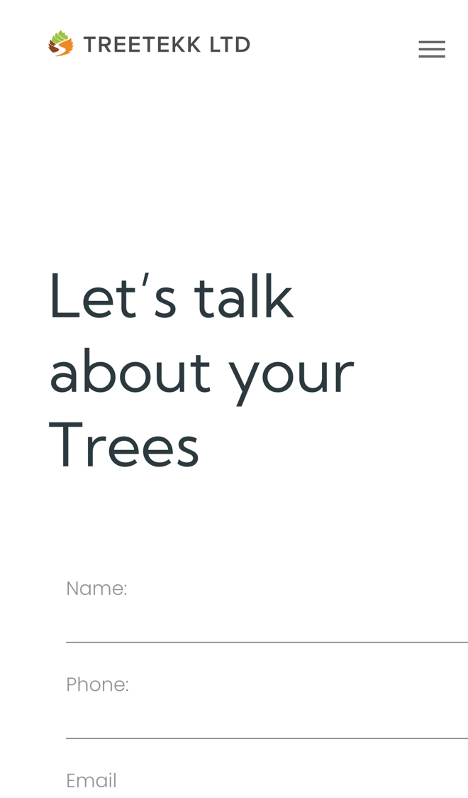

TreeTekk: from enquiry to estimate, with fewer wasted trips
I went through your website on a phone, the way a homeowner with an overgrown tree would, and read your services, about and contact pages. Your homepage makes a strong first impression. Where I think you'd win more work, and save time, is what happens after someone asks for an estimate.
What's already working
Three things I'd change
Let customers send photos with requests
Your contact form asks for "Name", "Phone", "Email", "Select Service" and "Message", with no way to add a photo or a postcode. On an iPhone test the contact page came out wider than the screen, so the form runs off the right-hand edge.

Without photos, most jobs need a visit before you can price them, and some of those trips are for small jobs or people who were only asking.
- The form fits the phone screen and asks for the postcode, what needs doing and two or three photos.
- You see the job before you go, so you can give a rough price or group visits by area.
- The customer gets a reply straight away saying what happens next and when to expect you.
Follow up estimates without chasing
Your How We Work section goes "Consultation", "Estimate", "Completion Of Works". Nothing on the site lets a customer accept an estimate or pick a date.
Estimates that go quiet are work lost, and chasing them by phone eats into evenings.
- Your estimate goes out as a link. The customer accepts it and picks a week that suits.
- If it isn't accepted after a week, a polite reminder goes out by itself.
- You see every estimate in one list: waiting, accepted or gone cold.
Catch the calls outside 8 to 6
Your hours are "Mon - Fri : 8am to 6pm" and your one number is 01978 265 909.
People often look at their trees in the evening or at the weekend. If nobody picks up, or the team is up a tree, they may ring the next firm.
- A missed call gets a text back within a minute, saying you'll be in touch.
- The text links to your estimate form, so they can send photos there and then.
- Each morning you see every missed caller in one list, with what they wanted.
Your website, answering for you
An assistant that answers the questions you get asked again and again, at any hour. These answers come only from your own website: your homepage, your services page and your about page.
Anything it can't answer, it passes to you with the customer's details.
What happens next
For five local businesses I'm setting up one of these for free, in return for an honest review. Pick whichever would help most.
I'm Tom Williams and I run Tomoni-AI. If a 20-minute chat would help, reply to my email or give me a ring.
Call 07971 512158Email Tom